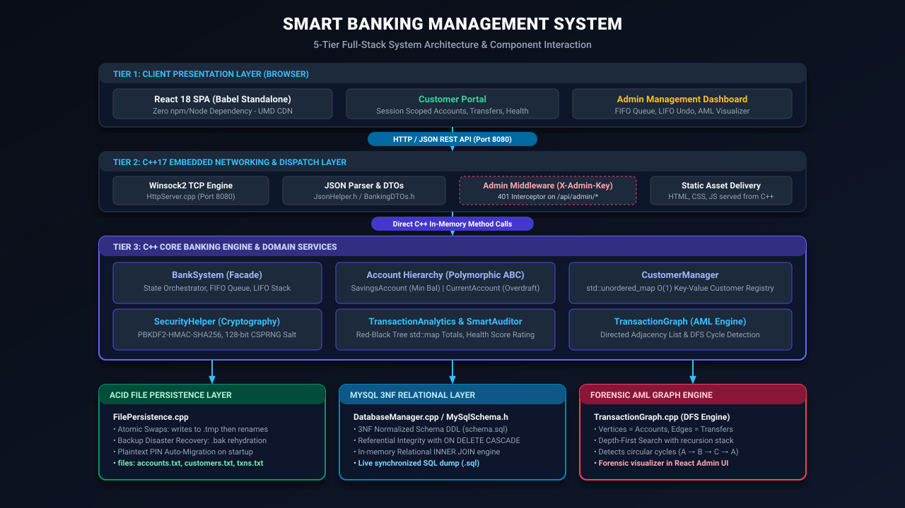
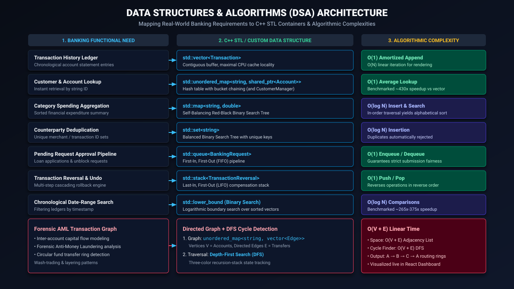
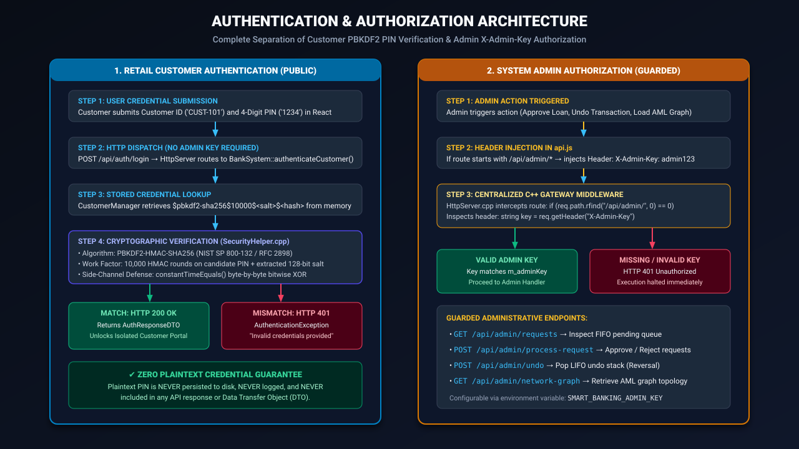
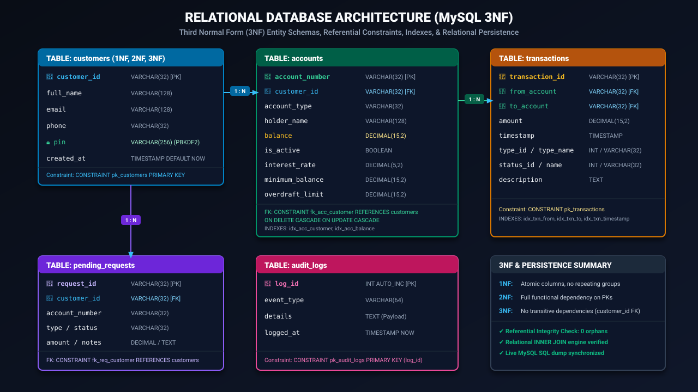

Build a decoupled, thread-safe core engine using clean domain models, DTO contracts, and RAII memory safety.
Demonstrate dynamic polymorphism, abstract base classes, encapsulation, inheritance, and standardized exception handling.
Implement and benchmark 9 STL structures and algorithms, delivering empirical proofs for theoretical Big-O complexities.
Implement salted PBKDF2-HMAC-SHA256 (10,000 rounds) and constant-time verification with zero plaintext credentials.
Engineer an embedded C++ Winsock2 HTTP server routing JSON requests and CORS negotiation without external web frameworks.
Deliver a modern, responsive Single Page Application with customer authentication, transfer forms, and live AML graphs.
Formulate a Third Normal Form relational schema with cascade foreign keys, B-Tree indexes, and automated SQL dump sync.
Model inter-account fund flows via directed graphs and detect circular routing rings via Depth-First Search (DFS).

React 18 Single Page Application rendering Customer Portals, Admin Dashboards, and SVG Graph visualizers.
Multi-threaded C++ Winsock2 HTTP Server on port 8080 routing JSON payloads and negotiating CORS pre-flight.
BankSystem, CustomerManager, and SecurityHelper coordinating accounts, ledgers, and atomic operations.
TransactionAnalytics, SmartAuditor, and TransactionGraph running DFS AML cycle detection.
Resilient flat-file atomic disk persistence (.tmp/.bak) synchronized with a MySQL 3NF relational layer.
Account (Abstract Base Class)
├── m_accountNumber : string
├── m_holderName : string
├── m_balance : double
├── m_isActive : bool
├── virtual bool withdraw(...) = 0
└── virtual void calculateInterest(...) = 0
/ \
/ \
SavingsAccount CurrentAccount
├── m_interestRate (4.0%) ├── m_overdraftLimit ($1000)
├── m_minimumBalance ($500) └── Overdraft validation
└── Min-balance check
BankingException → InvalidAmountException, InsufficientFundsException, AccountBlockedException, EntityNotFoundException.
m_balance, m_pinHash) are strictly protected. State mutations occur exclusively via validated public member functions.Account exposes a clean public interface (deposit, withdraw, calculateInterest) while encapsulating double-entry logging mechanics.SavingsAccount and CurrentAccount inherit common accounting logic while extending specialized banking fields.std::shared_ptr<Account> ensures correct derived withdrawal limits and interest rates execute at runtime.HttpServer.cpp and mapped to HTTP status codes (400, 401, 403, 404, 422).
| Data Structure / Algorithm | Actual Banking Application | Time Complexity | Space Complexity |
|---|---|---|---|
| std::vector<Transaction> | Chronological transaction history ledger | O(1) amortized append | O(N) contiguous |
| std::unordered_map<string, Account*> | Direct customer and account lookup | O(1) average (O(N) worst) | O(N) hash buckets |
| std::map<string, double> | Sorted category spending summary | O(log K) insert/search | O(K) Red-Black tree |
| std::set<string> | Unique counterparty deduplication | O(log U) uniqueness | O(U) balanced BST |
| std::queue<BankingRequest> | Administrative request approval pipeline | O(1) enqueue/dequeue | O(R) sequential |
| std::stack<TransactionReversal> | Cascading transaction undo engine | O(1) push/pop | O(S) sequential |
| Binary Search (std::lower_bound) | Date-range queries on sorted ledgers | O(log N) comparisons | O(1) auxiliary |
| Directed Graph (Adjacency List) | Transaction capital flow network | O(1) add edge | O(V + E) adj list |
| DFS Cycle Detection | Forensic AML circular ring detection | O(V + E) traversal | O(V) recursion |
HTTP 422.HTTP 403 Forbidden.HTTP 400).TRANSFER_OUT) and credits destination (TRANSFER_IN) atomically.EXCELLENT, HEALTHY, MODERATE, NEEDS_ATTENTION, CRITICAL.visited and inStack) in O(V + E) time.

CryptGenRandom.$pbkdf2-sha256$10000$<salt>$<hash>. Never exposed in API payloads or SQL dumps./api/admin/* routes.X-Admin-Key header.HTTP 401 Unauthorized.
1NF (atomic scalar fields), 2NF (no partial key dependencies), and 3NF (transitive dependencies eliminated by isolating customer contact metadata into customers).
accounts.customer_id references customers.customer_id with ON DELETE CASCADE ON UPDATE CASCADE. Verified: zero orphan accounts.
Secondary B-Tree indexes on customer_id, balance, from_account, and timestamp accelerate statement and dashboard queries to O(log N).
X-Admin-Key header; production requires asymmetric RS256 JWTs or OAuth2 bearer tokens with refresh rotation.Successfully demonstrates how modern C++17 systems programming, classical Object-Oriented principles, optimal Data Structures & Algorithms, cryptographic security, and 3NF database normalization can seamlessly power a modern, responsive web application.
Questions & Discussion